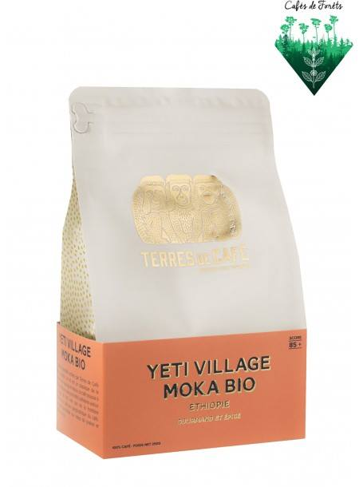

Yeti Village Moka Bio

Presentation
Un très beau café bio, fruité, épicé, gourmand et profond. A savourer à tous les moments de la journée.
Ce café semi-sauvage et nature offre une tasse aux notes d'épices douces et d'herbes sauvages. Légèrement acidulé, suave et avec beaucoup de corps, une tasse gourmande avec une finale au goût de miel et de praliné.